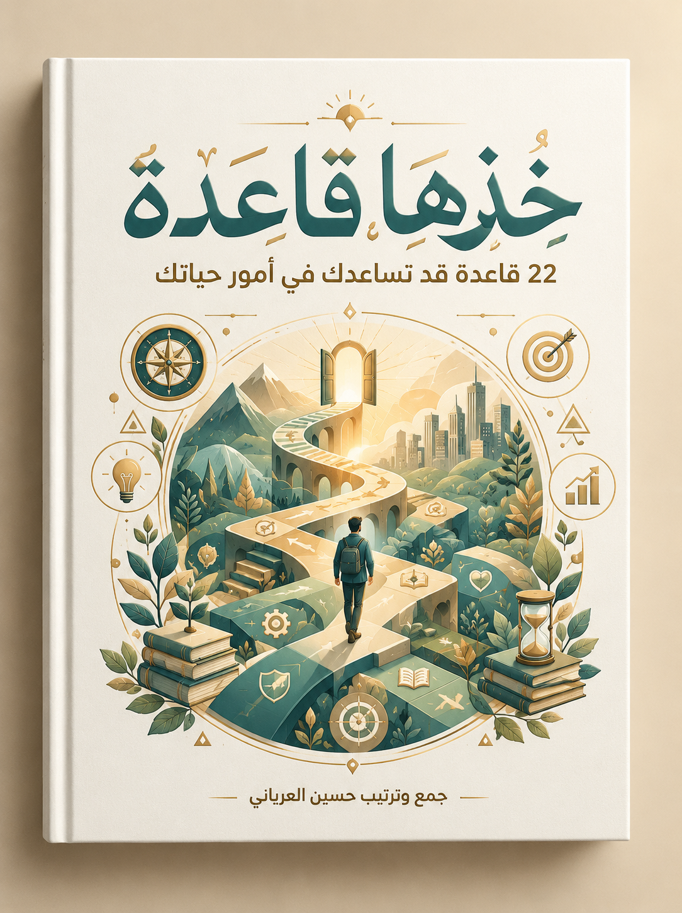

قراءة القرآن في الانتظار
قول المؤلف يحكي المؤلف أنه كان يقرأ القرآن في السيارة أثناء الانتظار، وأنه ثبّت عشر آيات من سورة الكهف بالتكرار أثناء المشي. (تفاصيل مُلخّصة بالمعنى.)
العبرة:استنتاج من الملخّص الوقت القصير المتكرر يُثمر حفظاً وعملاً.

بطاقة الكتاب، وتقريظ، ومقدمة المؤلف.
قاعدة لدفع التسويف بالبدء بخمس دقائق فقط.
كثير من الأعمال المهمة وغير المهمة يمكن البدء فيها بخمس دقائق. والقاعدة ليست حصر العمل في ذلك الوقت، بل حركة ذكية لترويض النفس والمبادرة إلى الطاعات.
قول المؤلف يحكي المؤلف أنه كان يقرأ القرآن في السيارة أثناء الانتظار، وأنه ثبّت عشر آيات من سورة الكهف بالتكرار أثناء المشي. (تفاصيل مُلخّصة بالمعنى.)
العبرة:استنتاج من الملخّص الوقت القصير المتكرر يُثمر حفظاً وعملاً.
«إن سبب انتصاري على أعدائي.. معرفتي لقيمة الدقائق الخمس»
— قائد عسكري كما يورده الكتاب
الدقائق الخمس بداية تكسر حاجز التأجيل؛ ثم تستمر النفس في العمل بعد البداية.
تفويض الأمر إلى الله، وعدم الانشغال بما ليس من شأنك، والإكثار من الدعاء.
الهمّ كثيراً ما يأتي من تعلّق القلب بما لا يملكه الإنسان. فيفوّض ما لا يملك إلى الله، ويفعل الأسباب المشروعة، ويكثر من الدعاء، ثم ينتظر كرم الكريم.
قول المؤلف ابتُلي أخ بدين وتأخر في سداده، فسُجن في رمضان، وكان يدعو دائماً ويصبر، ثم أُطلق سراحه. (التفاصيل المالية مُلخّصة ولم تُذكر أرقامها هنا لعدم التحقق.)
العبرة:استنتاج من الملخّص الصبر والدعاء مع فعل الأسباب بابٌ للفرج.
قول المؤلف خُطفت طفلة رضيعة في أول أيام حياتها، فانشغل الناس بالدعاء لها ومتابعة أخبارها، فأُعيدت سالمة بفضل الله (ص35–36).
العبرة:استنتاج من الملخّص الدعاء الجماعي معين على الفرج.
«نحن (والحمد لله) نملك سلاحاً عظيماً قوياً مؤثراً: الدعاء»
— قول المؤلف
أعجز الناس من عجز عن الدعاء
مسكين من تكاسل عن الدعاء
ما لا تملكه فوّضه إلى الله، وما تملكه فاعمل فيه بإتقان، ولا تجمع الهمّين.
التركيز على أهم الأعمال ينتج أفضل النتائج.
ضعف النتائج يأتي من التشتت وتبعثر الجهود، والتركيز على أفضل الأعمال يثمر أفضل النتائج.
قول المؤلف يذكر الكتاب قصة الدكتور محمود الطناحي الذي انقطع للعلم حتى أتقن فنونه (ص74–75).
العبرة:استنتاج من الملخّص من انقطع إلى شيء أتقنه.
«من انقطع إلى شيء .. أتقنه»
— الدكتور محمود الطناحي كما يورده الكتاب
إن طاردت أرنبين فلن تمسك أحدهما
تكاثرت الظباء على خراش فما يدري خراش ما يصيد
حدّد هدفاً واحداً، ثم قسّمه إلى مراحل صغيرة، وركّز على كل مرحلة حتى تتم.
التغافل والتجاوز عمّا يُسيء دون المساس بالضروريات.
التغافل عن الصغائر كرم وحلم وترفّع عن سفاسف الأمور وترفّق بالآخرين. والقاعدة أغلبية لا مطلقة، ولا تشمل ما يتعلق بالضروريات الخمس (ص76، 81).
قول المؤلف استشهد الحر بن قيس بقوله تعالى: {خُذِ الْعَفْوَ وَأْمُرْ بِالْعُرْفِ وَأَعْرِضْ عَنِ الْجَاهِلِينَ} (الأعراف: 199)، فكفّ عمر غضبه عند كتاب الله (ص79).
العبرة:استنتاج من الملخّص التذكير بكتاب الله يكفّ الغضب.
«العافية عشرة أجزاء، تسعة منها في التغافل»
— عثمان بن زائدة كما يورده الكتاب
ما زال التغافل من فعل الكرام
الكيّس العاقل هو الفطن المتغافل
التغافل يطفئ شراً كثيراً
ليس كل خطأ يستحق الرد؛ اختيار المعارك الصغيرة يحفظ الطاقة والعلاقات.
الحياة قائمة على التعب، والنجاح ثمرة المشقة.
لا أحد يخلو من التعب والمشقة؛ فالملك والعالم والطبيب والطالب كلهم يتعبون. والمشقة المحتملة في سبيل رضا الله أو إنجاز مباح نافع هي ما تُقصده القاعدة (ص92–93).
«عددت الأيام السعيدة في حياتي فوجدتها أربعة عشر يوماً»
— عبدالرحمن الناصر كما يورده الكتاب (ص101)
شأن كل عظيم القدر أن لا يُحصّل بالطرق السهلة
التعب المقرون بغاية شريفة يصبح مكسباً يُنسى مع الإنجاز.
الندم على الماضي لا يلغي إمكانية البدء الآن.
كلمات التحسر والندم يرسلها الوهم، فيظن المرء أن الأمر فات وانتهى. فلا تقل «فات الأوان»، بل قل: «ما فات شيء» (ص103–104).
قول المؤلف يروي ابنها أنها واظبت على دراسة القرآن في دار لتحفيظه، وقد بدأت وعمرها نحو خمسين عاماً، حتى ختمته وبكت يوم ختمه (ص120).
العبرة:استنتاج من الملخّص لا يمنع السن من الطلب.
العلم في الكبر كالنقش في الحجر
رحلة الألف ميل تبدأ بخطوة
ما يملكه المرء الآن أكثر مما يتصوره؛ المهم الاستمرار لا الندم.
مواجهة النفس بالتحدي لتعويدها على الفضائل.
معالجة النفس وكبح جماحها من أشد ما يواجهه العبد، والتحدي يولد الإصرار والكفاح والمثابرة (ص123–124).
«إن أفضل أنواع التنافس.. هو التنافس مع الذات»
— د. كنعان فياض، كتاب وصايا ذهبية (ص129)
من يتهيب صعود الجبال يعش بين الحفر
حدّد أهدافك بوضوح وخطة وأوقات، ثم تجاوز عن حظوظ هواك وابذل.
أداء الواجب فوراً دون تأجيل.
إذا بلغك خبر يستوجب تهنئة أو مواساة أو دعاء فبادر به الآن، ولا تؤخره بحجة المناسبة المثالية (ص131–132).
«كل شيء من الخير تهتم به فبادر به قبل أن يحال بينك وبينه»
— الإمام النووي كما يورده الكتاب (ص139–141)
التأجيل في الخير يتحول إلى حرمان، والمبادرة تحفظ الفرصة وتُسعد الآخرين.
سؤال المراجعة قبل الخوض في النقاش أو القرار.
قبل أن تشارك في نقاش أو تتخذ قراراً أو تنشغل بمشكلة، اسأل نفسك: «وبعدين؟» ما الثمرة؟ وما الأثر المرجو؟ (ص142).
كثير من القرارات تتلاشى عند السؤال: وبعدين؟ فالوقت أهم من أن يُقضى فيما لا فائدة منه.
الثناء الصادق يجلب المحبة ويشجّع على الخير.
الكلمة الطيبة تؤثر في النفس وتجلب المحبة أكثر مما يفعل المال، والمدح المعتدل الصادق يترك أثراً في الممدوح (ص163).
«إن هذا كان لكم جزاء وكان سعيكم مشكوراً»
— القرآن الكريم (الإنسان: 22)
من تمام الإكرام عند الكرام أن يتبعوا كرامتهم بقول ينشط له المكرَم
الكلمة الصادقة في وقتها صدقة لا تكلّف شيئاً.
حسن الظن بالإخوان والتماس الأعذار لهم.
القاعدة تعني التماس العذر للإخوان في أقوالهم وأفعالهم، وجعل إحسان الظن أساساً، وترك إساءة الظن منهجاً (ص170).
«لا تظنن بكلمة خرجت من أخي المسلم شراً وأنت تجد لها في الخير محملاً»
— عمر بن الخطاب كما يورده الكتاب (ص172)
كلامي صواب يحتمل الخطأ، وكلام غيري خطأ يحتمل الصواب
حمل الكلام على أحسن محامله يريح القلب ويحفظ الود.
تجاوز الحواجز الوهمية بالتجربة العملية.
كثيراً ما نضع حواجز وهمية وعقبات نفسية أمام الأعمال الصالحة، وهي من تخذيل الشيطان؛ فالتجربة تكشف زيفها (ص184).
«لا يفقه من قرأ القرآن في أقل من ثلاث»
— حديث عبدالله بن عمرو (رواه أبو داود، كما يورده الكتاب)
من راح في الساعة الأولى فكأنما قرّب بدنة
أكثر العقبات تكون في الذهن قبل أن تكون في الواقع، والتجربة الصغيرة تكفي لكسرها.
قول «لا» للمفسِدات بأدب ولين.
أكثر ما يُفسد الوقت والعمل إقحام النفس فيما لا فائدة فيه، وجميل الأعمال والأقوال لا يخرج عن «نعم» أو «لا» (ص196).
«يعجبني الرجل إذا سِيم خطة ضيم قال: لا.. بملء فيه»
— عمر بن الخطاب كما يورده الكتاب (ص197)
لا تجامل نفسك أو غيرك فيما يضر، وقل «لا» في موضعها يحفظ الوقت والكرامة.
اقتناص الفرص قبل فواتها.
كثير ممن فازوا بعلم أو منصب أو توفيق اقتنصوا فرصاً تأخر عنها غيرهم بسبب التقاعس (ص202).
«اغتنم خمساً قبل خمس: شبابك قبل هرمك، وصحتك قبل سقمك، وغناك قبل فقرك، وفراغك قبل شغلك، وحياتك قبل موتك»
— حديث ابن عباس (رواه الحاكم)
بادر الفرصة واحذر فوتها
لا تلم الفرص حينما تقصر في البحث عنها
الفرص لا تنتظر المتأخرين؛ استعد لها، ولا تتردد في اقتناصها.
البشاشة والابتسامة تفتح القلوب.
البشاشة والابتسامة سبب للارتياح والاستئناس، وقد تكون صدقة، وكانت الابتسامة الصادقة شعار النبي ﷺ (ص208–209، 215).
«لا تحقرن من المعروف شيئاً، ولو أن تلقى أخاك بوجه طلق»
— حديث رواه مسلم كما يورده الكتاب
ما رأيت أحداً أكثر تبسماً من رسول الله
الابتسامة أقل الصدقات كلفة وأعظمها أثراً في القلوب.
الرد على السؤال المستفز بسؤال يعيد الحوار إلى نصابه.
إذا وُجّه إليك سؤال مفاجئ أو مستفز، فاقلب السؤال عليه بصيغة هادئة، أو اسأله عما يريد أن يعرف (ص219).
قول المؤلف سأل رجل النبي ﷺ عن الساعة، فردّ عليه بسؤال: «وماذا أعددت لها؟» (ص220).
العبرة:استنتاج من الملخّص السؤال المستفز قد يكشف حال السائل.
الرد الهادئ بسؤال يفتح باب الحوار ولا يغلقه.
التثبت قبل النقل والحكم.
قبل أن تنقل خبراً أو فتوى أو شائعة فتأكد من صحتها، امتثالاً لقوله تعالى: {يَا أَيُّهَا الَّذِينَ آمَنُوا إِن جَاءَكُمْ فَاسِقٌ بِنَبَإٍ فَتَبَيَّنُوا} (الحجرات: 6) (ص225–226).
«يا أيها الذين آمنوا إن جاءكم فاسق بنبأ فتبينوا»
— القرآن الكريم (الحجرات: 6)
الكلمة المنقولة أمانة، والتثبت يحمي من الظلم والإيذاء.
تعويض ما فات من الطاعات بعمل مثله.
إذا عزم المرء على عمل فقصّر في إتمامه، فالسبيل التعويض بعمل مثله؛ وقد قيل: من ترك شيئاً لله عوّضه الله خيراً منه (ص231–232).
«من نام عن حزبه أو عن شيء منه فقرأه ما بين صلاة الفجر وصلاة الظهر كُتب له كأنما قرأه من الليل»
— حديث رواه مسلم كما يورده الكتاب (ص236)
التقصير لا يُقنط، وكل ما فات يُعوّض بعمل مثله.
استحضار حال المقابل قبل الفعل أو الترك.
أن يضع المرء نفسه في حال المُقابِل عندما يريد أن يُقدم على فعل أمر أو ترك. ويسأل نفسه: ماذا لو كنت مكانه؟ (ص237).
«إذا نحن تصرفنا ضد أعدائنا وضد أولئك الذين يوقعون الظلم علينا بعين الأسلوب الذي يستخدمونه معنا، فما الميزة التي تجعلنا أكثر أهلية منهم؟!»
— الدكتور عبدالكريم بكار كما ينقله الكتاب (ص240)
لو كنت في مكاني ماذا سيكون موقفك؟
الميزان الذي تحكم به على الآخرين هو الميزان الذي ستُحاسَب به؛ فضع نفسك مكانه قبل أن تقرر.
السؤال مفتاح العلم وباب حل المشكلات.
لا بد أن يسأل المرء عما لا يعلم، ويعلم أن سؤاله لا يُنقص من قدره، بل الجهل هو الذي ينقص من القدر ويؤثر في القيمة (ص242–243).
قول المؤلف يُروى أن طفلاً أشغل والده بكثرة الأسئلة في السيارة، فكان الأب يقول: لا أدري. فقالت الأم: خلاص يا ولد أشغلت والدك! فقال الأب: دعيه يسأل كي يتعلم (ص245).
العبرة:استنتاج من الملخّص السؤال وسيلة التعلم.
«العلم خزائن، ومفاتيحها السؤال»
— الإمام الزهري كما يورده الكتاب (ص248)
لا تخجل من السؤال عن شيء تجهله؛ فخير لك أن تكون جاهلاً مرة عن أن تنطوي على جهلك طول العمر
من لم يسأل لم يتعلم؛ والسؤال الصحيح يوفّر الوقت ويصحح الخطأ.
ترك أثر نافع يلقى به العبد ربه.
أن نقدّم لأنفسنا إنجازات نسعد بها يوم لقاء الله، وإنجازات نفخر بها عند أهلينا وأصدقائنا وأمتنا، مما يقربنا عند الله (ص249).
«وكن رجلاً إن أتوا بعده يقولون: مرّ وهذا الأثر»
— أحمد شوقي كما يورده الكتاب (ص251)
فاز من حياته إنجاز
الإنجاز لا يُقاس بحجمه فقط، بل بنيته وأثره؛ فاكتبه وراجعه وأكمله.
الشكر للناس والكلمة الطيبة.
الكلمة الطيبة مؤثرة وإن بدت صغيرة، والشكر للناس شكر لله، لقوله ﷺ: «لا يشكر الله من لا يشكر الناس» (رواه أحمد وأبو داود والترمذي) (ص255).
«قل «شكراً» لمن يستحقها، ولا تظن أنها كلمة صغيرة بلا تأثير»
— أ. محمد الرطيان كما يورده الكتاب (ص261)
ومن الرزية أن شكري صامت عما فعلت وأن بِرّك ناطق
كلمة الشكر تكلّف لساناً وتترك أثراً في القلب، وتُعلّم الناس أن يشكروا بعضهم.
مبادئ تجمع القواعد، وأسئلة يتكرر طرحها في الكتاب.
خاتمة المؤلف، ثم خلاصة تُضاف إلى التفاصيل لا تحل محلها.
الكتاب يدور حول فكرة واحدة: أن الإنسان يصنع أيامه بتفاصيل صغيرة يتحكم فيها: بداية صغيرة، وتركيز على الأهم، وسؤال يحاسب الوقت، وتعويض لما فات، وقول «لا» في موضعها، وابتسامة وشكر وثناء صادق. مع ذلك كله، التوكل على الله والدعاء. ويجمع الكتاب بين الأخلاق والإنتاجية في إطار ديني واحد.
تحقّق من ظهور كل قاعدة في صفحتها المفهرسة في الكتاب؛ وأرقام الصفحات من فهرس الكتاب (ص263–264).
| # | القاعدة | الصفحات | حالة الظهور |
|---|---|---|---|
| ١ | الخمس دقائق | ص 9–24 | ظاهرة ✓ |
| ٢ | مهوب شغلك | ص 25–61 | ظاهرة ✓ |
| ٣ | ركّز | ص 62–75 | ظاهرة ✓ |
| ٤ | مشّي | ص 76–91 | ظاهرة ✓ |
| ٥ | لازم تتعب | ص 92–102 | ظاهرة ✓ |
| ٦ | ما فات شيء | ص 103–122 | ظاهرة ✓ |
| ٧ | تحدَّ | ص 123–130 | ظاهرة ✓ |
| ٨ | الآن | ص 131–141 | ظاهرة ✓ |
| ٩ | وبعدين؟! | ص 142–162 | ظاهرة ✓ |
| ١٠ | امدح | ص 163–169 | ظاهرة ✓ |
| ١١ | ممكن | ص 170–183 | ظاهرة ✓ |
| ١٢ | جرّب | ص 184–195 | ظاهرة ✓ |
| ١٣ | لا | ص 196–201 | ظاهرة ✓ |
| ١٤ | فرصة | ص 202–207 | ظاهرة ✓ |
| ١٥ | ابتسم | ص 208–218 | ظاهرة ✓ |
| ١٦ | قلب السؤال! | ص 219–224 | ظاهرة ✓ |
| ١٧ | تأكّد | ص 225–230 | ظاهرة ✓ |
| ١٨ | تعويض | ص 231–236 | ظاهرة ✓ |
| ١٩ | ضع نفسك مكانه | ص 237–241 | ظاهرة ✓ |
| ٢٠ | لازم تسأل | ص 242–248 | ظاهرة ✓ |
| ٢١ | إنجاز | ص 249–254 | ظاهرة ✓ |
| ٢٢ | شكراً | ص 255–261 | ظاهرة ✓ |
| — | المقدمة | ص 3–8 | ظاهرة ✓ |
| — | الخاتمة | ص 262 | ظاهرة ✓ |